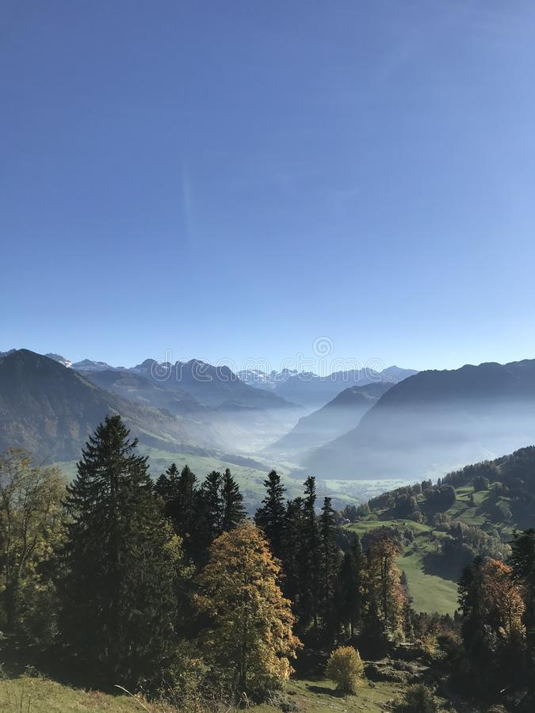

关于望关
这里记录了我们的想法
欢迎所有有望对望关的内容建设做出贡献的人
-
望关 WangGuan Sociology
- “雄关漫道真如铁，而今迈步从头越”
-
哲学、各类社会科学和马克思主义的各类流派现在面临一个共同的问题：如何使哲学和各种社会科学进入大众视野，以及如何让人快速掌握哲学和各类社会学的基本观点。
哲学和各类社会科学还常常被误解和政治哲学或某种官方意识形态相绑定的东西，其结果是：社会本身厌倦了虚假的、庸俗的学术，并排斥真正的哲学和社会学。
这个网站就是为零散的哲学和社会学爱好者 - 望关以这样一个目标：推广哲学和社会科学的认识，推动大众普及社会学，以及为哲学和社会学提供交流分享和学习的平台而存在。
-
望关承担了学习共享和文章刊登的功能。
哲学、社会学的宣传推广不能仅仅依靠于实体的书本和报纸或者口头的宣传，
网络宣传的开展也有利于这个工作。在便携性和易读性上要好于传统的宣传方式（当然最好还是线下教学的形式）。
我（ArbeiterKlassen）建设这个网站的目的一开始就在于通过网络——刊登文章的方式向学生群体和大众推广各类哲学和社会科学理论和思想，
再到最近（2022~2023）添加新的讨论版等等，一个目的也是为了维护网站的宣传功能，也即给予更多人一个思考和自由交流、发表观点的空间。
当然，望关的缺点也很明显。除了网页优化不够好，对手机的适配不高之外。主要问题还在于——群众掌握不到实体的宣传信息，也可能没有耐心主动了解各类思想和理论，我却不能强求。 -
望关现在所拥有的一切——资料，文件，文章和底层的代码逻辑等等都不是我一个人或者什么组织的“功劳”，我也不希望望关仅仅是宣传一家思想的阵地。
望关的建立原则也是如此，不是一个思想四面出击的地方。现实理论的复杂程度也决定望关这一个网站不可能思想完全统一。
望关对各类思想，无论各类社会主义理论、唯心主义哲学还是西方的、中国的各类社会科学，是包容和尊重的态度，不倾向于宣扬任何一个观点，仅仅在于学习、共进和分享。
望关的名字来源于？
为什么以望关作为名字？
望关为什么而建立？
望关的意义何在？
望关对不同的思想持怎么样的态度？
-
Calendar
MONTH
S
M
T
W
T
F
S
Created By WangGun Sociology
